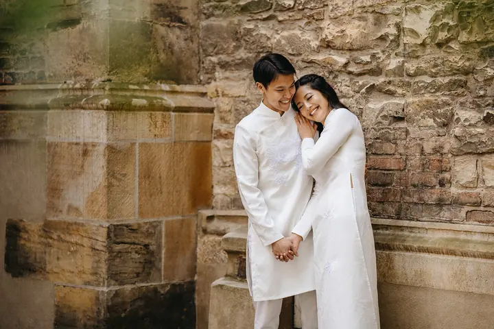

jedna
Svatební focení
Na svatbě vás zachytím přesně takové, jací jste. Fotky budou odrážet, jak jste se ten den cítili, a vrátí vás zpět do svatebního dne.

Svatební fotograf z Plzně · Plzeň, Plzeň a okolí, zahraničí

Jmenuji se Jiří Bešta a jsem svatební fotograf z Plzně. Nikdy mě nebavily strojené a aranžované fotky, mám raději přirozenost. Focení se mnou je spíš procházka, během které se poznáme a já vás vyfotím.
Více o mně
Co dělám
jedna
Na svatbě vás zachytím přesně takové, jací jste. Fotky budou odrážet, jak jste se ten den cítili, a vrátí vás zpět do svatebního dne.
dvě
Fotograf a kameraman v jednom balíčku. Ve verzi Premium točíme celý den ve dvou kameramanech a dostanete svatební klip dlouhý 5 až 8 minut.
tři
Uvolněné focení celé rodiny bez strojeného aranžování. Fotky dostanete v online galerii a část z nich i vytištěnou.
Portrétní focení pojaté jako procházka, během které se poznáme. Výsledkem jsou přirozené fotky, na kterých budete sami sebou.
Fotky, které vás vrátí do svatebního dne.


Za objektivem
Jsem svatební fotograf z Plzně, ale velmi rád a často se vydávám i za hranice města, a když je potřeba, tak i za hranice země. Fotím už od roku 2013 a čím déle to dělám, tím víc mě to baví.
Fotím svatby takové, jaké doopravdy jsou. Neřídím každý váš krok a nestavím vás do póz. Chci, aby vaše fotky nebyly jen vzpomínkou, ale aby vás vrátily přímo do svatebního dne, k tomu, jak jste se tehdy cítili.
Kromě svateb fotím i rodiny, těhotenské focení a portréty. Pokud máte na mysli něco jiného, třeba komerční focení, produkty nebo event, napište mi a domluvíme se. Těším se na každého z vás.
Jiří
Pošlete mi termín a místo svatby a já se vám ozvu s volnými termíny a možnostmi balíčků.
Sejdeme se, poznáme se a projdeme spolu, jak má váš den vypadat a na čem vám nejvíc záleží.
Jsem s vámi podle zvoleného balíčku až 12 hodin. Fotím nenápadně a přirozeně, bez zbytečného aranžování.
Dostanete stovky upravených fotografií v digitální podobě a podle balíčku i tištěné fotky nebo luxusní fotoknihu.
Portfolio
Fotografie jsou ilustrační
Otázky
Mám tři balíčky: Foto 8, Foto 10 a Foto 12, v rozmezí od 22 000 Kč do 29 000 Kč. Liší se délkou focení, počtem fotografií a tím, co k nim dostanete navíc. Každá další hodina navíc stojí 1 400 Kč.
Ano. Balíček Foto & Video Basic za 49 000 Kč zahrnuje fotografa a kameramana na 8 hodin. Premium za 59 000 Kč pokrývá celý den se dvěma kameramany, svatebním klipem v délce 5 až 8 minut a dárkovou krabičkou s USB.
V balíčku Foto 12 dostanete 15 a více fotografií hned do druhého dne. Kompletní sadu pak připravím co nejdřív po svatbě.
Rád a často. Fotím v Plzni a okolí, ale vyrážím i dál po republice a do zahraničí. Doprava se řídí podle zvoleného balíčku, u balíčku Foto 12 je zdarma.
Balíček Standard za 3 000 Kč obsahuje 10 upravených fotografií, online galerii a 5 vytištěných fotek. Premium za 4 500 Kč zahrnuje všechny upravené fotografie a 10 vytištěných fotek.
Napište pár vět o tom, co si představujete. · +420 603 315 825